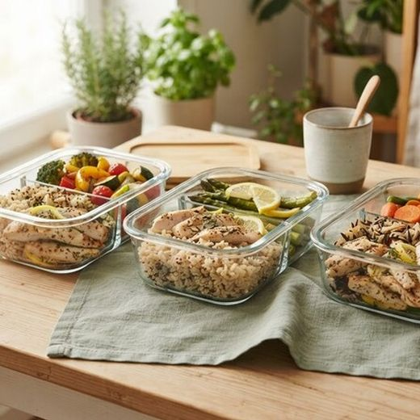
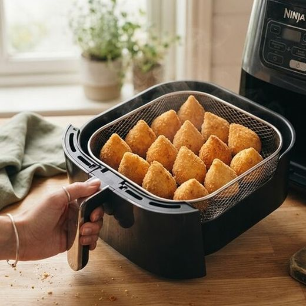
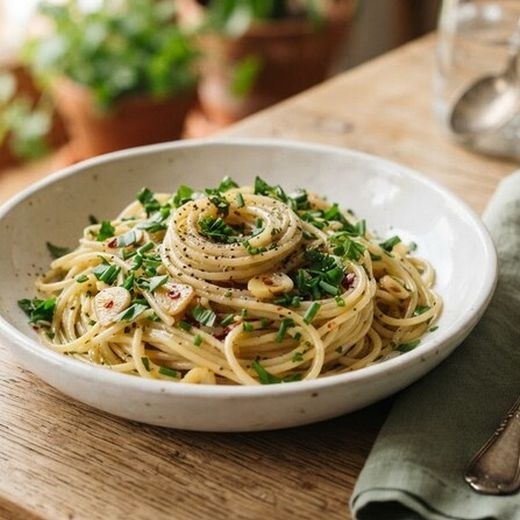
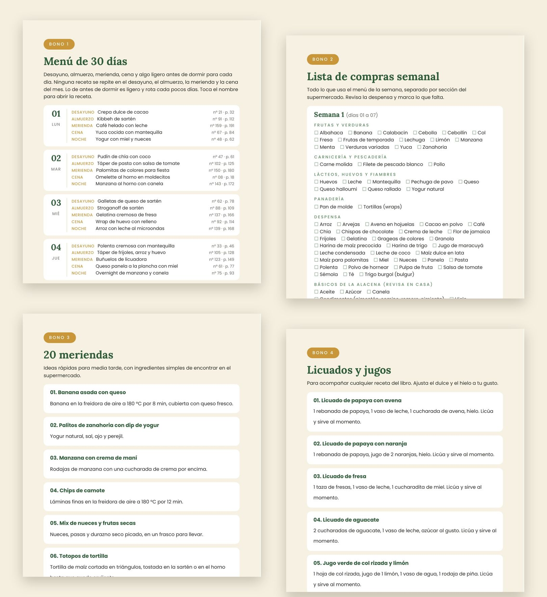
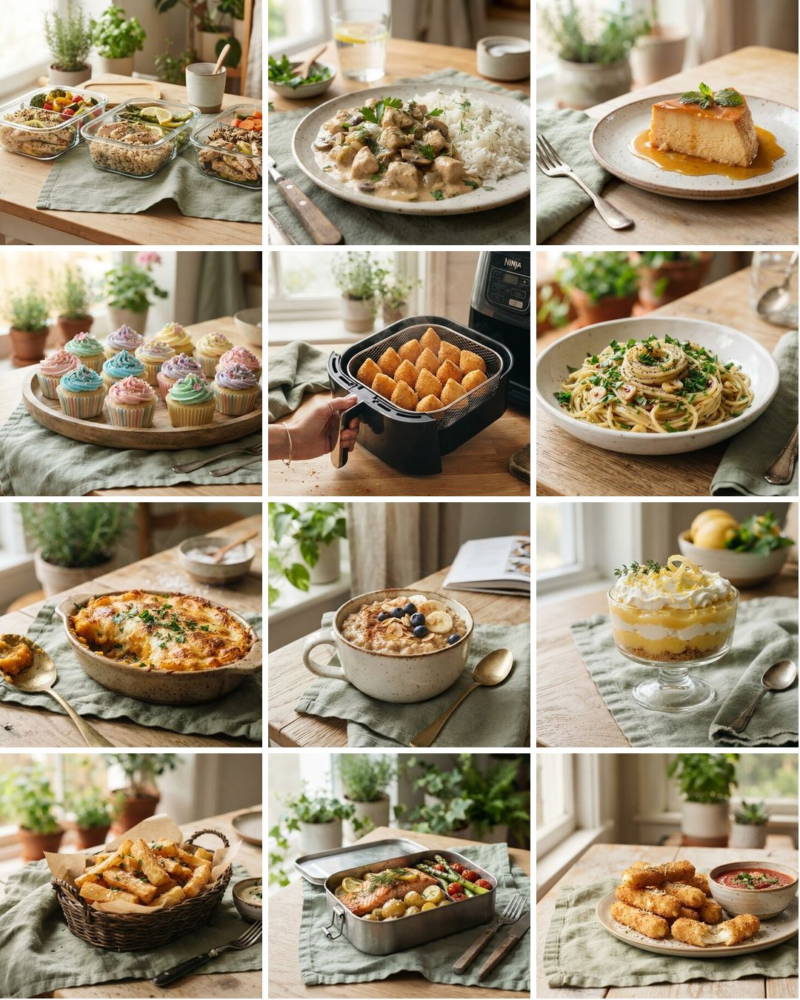
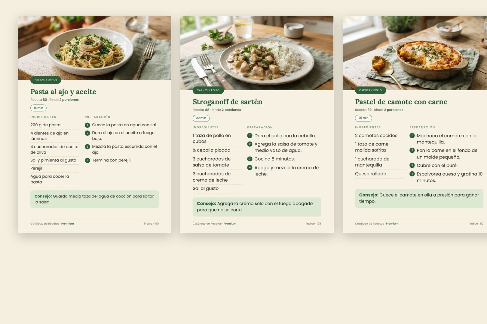

Hasta 160 recetas sencillas para variar el almuerzo, la cena, el táper, el postre y la merienda. Todas con foto y paso a paso.
Del almuerzo de la semana al postre del domingo, todas con foto y tiempo de preparación.



Cada nivel incluye todas las recetas del nivel anterior.

Así son todas: foto, tiempo, ingredientes, paso a paso y un consejo.
Desayuno, almuerzo, táper, meriendas de los niños, fiestas, postres y bebidas. Cada nivel trae una parte de las recetas de cada categoría.

| Categoría | Básico | Interm. | Premium |
|---|---|---|---|
| Huevos de todas las manerasProteína rápida en la sartén, en 5 a 10 minutos. | 4 | 7 | 12 |
| Tortillas y crepasQuesadillas y crepas rápidas, saladas o dulces. | 4 | 7 | 10 |
| Panqueques y wafflesMasas simples con avena y banana, listas en minutos. | 4 | 7 | 10 |
| Polenta y maízDesayunos calientes y reconfortantes con maíz. | 3 | 7 | 8 |
| Bowls, yogur y avenaDesayunos frescos, para armar o dejar listos la víspera. | 3 | 7 | 10 |
| Bizcochos en taza y horneadosDulces caseros en el microondas o en el horno. | 3 | 7 | 8 |
| Salados rápidosOpciones saladas para quien no quiere pan. | 3 | 5 | 7 |
| Camote, yuca y papaRaíces y tubérculos cocidos de forma simple. | 3 | 6 | 6 |
| Para llevar y dejar listoPara llevar al trabajo o dejar listo la víspera. | 3 | 6 | 6 |
| Pastas y arrozArroz, pasta y risotto de sartén, sin complicaciones. | 3 | 6 | 7 |
| Carnes y polloPlatos principales rápidos, con lo que suele haber en casa. | 3 | 7 | 7 |
| Sopas, wraps y pizzasCenas ligeras, listas en pocos minutos. | 3 | 5 | 8 |
| MeriendasIdeas para media tarde, dulces y saladas. | 3 | 7 | 11 |
| Postres rápidosDulces de cuchara, de refrigerador y de microondas. | 3 | 7 | 12 |
| Freidora de aireCrujiente por fuera y suave por dentro, con poco aceite. | 3 | 6 | 8 |
| Táperes de la semanaPrepara el domingo y ten el almuerzo listo toda la semana. | 3 | 6 | 8 |
| Fiestas y cumpleañosSalados y dulces para la mesa de la fiesta. | 3 | 6 | 8 |
| Recetas para niñosRecetas divertidas que a los niños les gusta ayudar a hacer. | 3 | 5 | 6 |
| Bebidas sin alcoholJugos, tés y bebidas frías para todos los días. | 3 | 6 | 8 |
| Total de recetas | 60 | 120 | 160 |

Apenas se confirma el pago, llega a tu e-mail el acceso al área de miembros, donde descargas el PDF.
Sí. Es un PDF común: puedes leerlo en el celular, la tablet o la computadora, o imprimirlo.
No. Las recetas usan ingredientes de cualquier supermercado: huevo, arroz, pollo, papa, avena, banana, queso y frutas.
Sí. El libro incluye una nota con los nombres que cambian según el país (camote, calabacín, choclo, frijoles…).
El Básico tiene 60 recetas. El Intermedio tiene 120 recetas, menú de 30 días y lista de compras semanal. El Premium tiene las 160 recetas y los 4 bonos: menú, lista de compras, 20 meriendas y 12 licuados y jugos. Cada nivel incluye todas las recetas del anterior.
No. La mayoría usa sartén, olla, taza y microondas. Algunas recetas usan horno o freidora de aire, y eso está indicado en cada una.
La mayoría queda lista en hasta 30 minutos, y el tiempo está escrito arriba en cada receta. Algunas, como flan, mousse y tartas, necesitan horno o refrigerador.
Sí. Es un PDF común: puedes leerlo en pantalla o imprimir las recetas que más uses.
No. Es pago único.
Tienes 7 días de garantía. Pides el reembolso y te devolvemos el valor completo.
Por solo US$ 8,00 más que el Básico, el Premium trae 100 recetas más y los 4 bonos: menú de 30 días, lista de compras, 20 meriendas y 12 licuados y jugos.